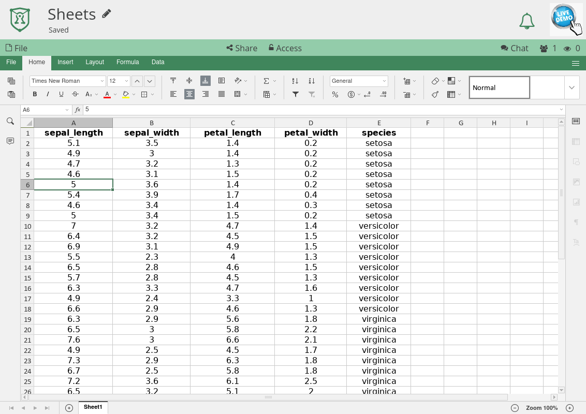

Spreadsheet¶
The Spreadsheet application in CryptPad is an integration of OnlyOffice. To read more about the details of this integration see What is the relationship between CryptPad and OnlyOffice?.
Dokumentation¶
Eine Anleitung zur Verwendung von Tabellen findest du in der OnlyOffice-Dokumentation.
Toolbars¶
CryptPad integrates OnlyOffice spreadsheets into the same encrypted collaboration system as the other applications. Additionally OnlyOffice provides a wide range of functions in a tabbed toolbar. This results in a double toolbar that can cause confusion:
Gefahr
XXX add spreadsheet toolbar screenshot
The topmost CryptPad toolbar is used for File operations (including import/export, history, properties, etc) as well as Share and Access.
The OnlyOffice toolbar is used for all functionality within the spreadsheet document itself, as well as the collaboration modes explained in the next section.
Undo and collaboration modes¶
OnlyOffice provides two collaborative editing modes in spreadsheets that affect how changes are synced between users and whether or not the Undo functionality is available.
Fast Mode is enabled by default. New edits by all users are automatically synced with others as they are made. In this mode it is not possible to undo.
Strict Mode allows each user to make changes independently. The modified cells are "locked" for others until the author manually saves their changes. New edits are only synced with other users after being saved. In this mode it is possible to undo changes that have not yet been saved. When a user saves their changes, others are prompted to save in order to receive the latest edits.
When Ctrl Z is pressed for undo, the application will automatically suggest switching to Strict Mode to enable the undo functionality.
To switch back to Fast mode use the Collaboration tab in the OnlyOffice toolbar and select Co-editing Mode > Fast.
Bemerkung
Note that CryptPad remembers your choice of editing mode across sessions and documents.
Verlauf¶
To access the spreadsheet history, use File > History in the CryptPad toolbar.
Aufgrund der Integration von OnlyOffice in die verschlüsselte Echtzeit-Zusammenarbeit von CryptPad funktioniert der Verlauf in Tabellen anders als der Verlauf in anderen Anwendungen.
Werkzeugleiste für den Verlauf in Tabellen¶
Der Verlauf in Tabellen erlaubt, zu einer vorherigen Version zurück zu springen und sich dann durch die einzelnen Bearbeitungen nach vorne zu bewegen.
vorherige Version
nächste Bearbeitung
nächste Version
Die Wiederherstellung und das Teilen einer Version, sowie Gespeicherte Versionen funktionieren wie in den anderen Anwendungen.
Printing¶
To print spreadsheets it is recommended to export using one of the formats below and to handle page layout with a desktop application such as LibreOffice Calc.
Alternatively the .pdf export can be used to produce file for print, results may vary depending on the layout of the document.
Import/Export¶
.bin wie von dieser Anwendung exportiert, Excel-Dateien .xslx..bin, Excel .xslx, .ods, .csv, .pdf.